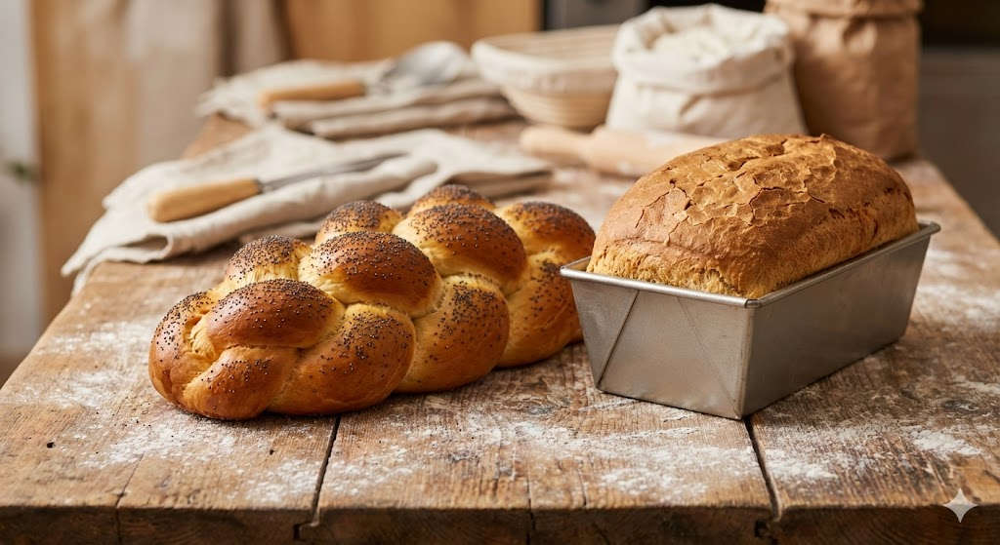

Form & Struktur: Vom Zopf zum Toast
Form ist Geschmack. Ein runder Laib schmeckt anders als ein Baguette aus demselben Teig, weil das Verhältnis von Kruste zu Krume anders ist. Und Flechten ist reine angewandte Geometrie.
1. Die Flecht-Mathematik
Warum flechten wir? Nicht nur für die Optik. Durch das Verweben entstehen Scherkräfte im Teig. Die Glutenstränge werden "verdrillt". Das Ergebnis ist eine extrem feine, faserige Wattierung (Splitting), die man beim Auseinanderreißen sieht.
Strang-Theorie
- 1 Strang (Knopf): Hohe Spannung im Zentrum, bleibt lange saftig.
- 2 Stränge (Zopf): Erzeugt Höhe. Perfekt für den Ofentrieb.
- 6 Stränge (Challah): Flach und breit. Maximale Oberfläche für Sesam/Mohn.
2. Kleingebäck: Semmel & Bürli
Je kleiner das Gebäck, desto größer der Krustenanteil im Verhältnis zur Krume (Oberfläche-zu-Volumen-Verhältnis). Kleine Brötchen trocknen schneller aus, haben aber mehr Röstaromen.
Handsemmel vs. Maschine: Die handgeschlagene Kaisersemmel wird 5-mal zur Mitte gefaltet. Das erzeugt enorme Spannung. Sie geht im Ofen viel höher auf als eine "gestempelte" Semmel.
3. Das Kastenbrot (Toast)
Physik des Einsperrens
Toastbrot wird oft im geschlossenen Kasten ("Pullman") gebacken. Der Teig dehnt sich aus, stößt aber an den Deckel. Der Innendruck steigt. Da der Dampf nicht entweichen kann, bleibt die Rinde hauchdünn und weich, und die Krume wird extrem feinporig und wattig.